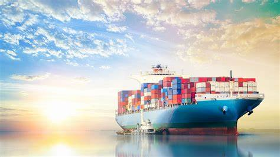
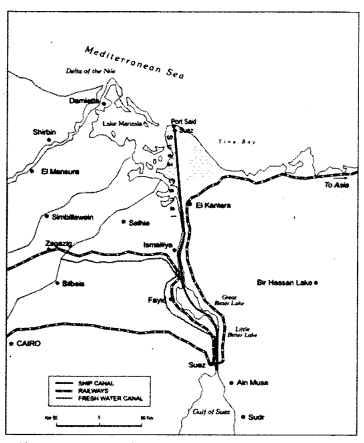
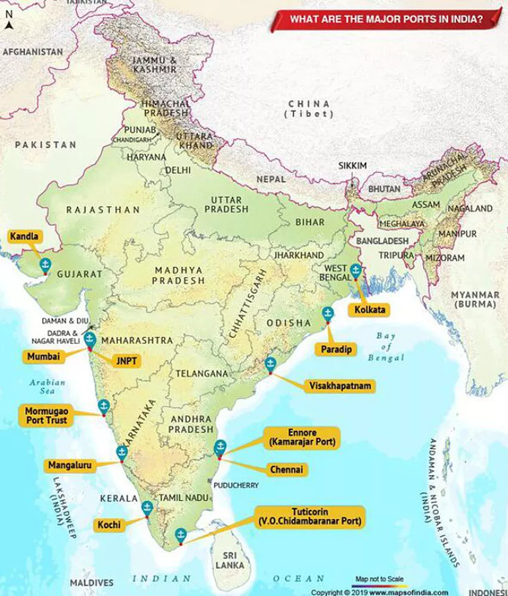

17 Transport Waterways
Water Transport

One of the great advantages of water transportation is that it does not require route construction. The oceans are linked with each other and are negotiable with ships of various sizes. All that is needed is to provide port facilities at the two ends. It is much cheaper because the friction of water is far less than that of land. The energy cost of water transportation is lower. Water transport is divided into sea routes and inland waterways.
Sea Routes
The oceans offer a smooth highway traversable in all directions with no maintenance costs. Its transformation into a routeway by sea-going vessels is an important development in human adaptation to the physical environment. Compared to land and air, ocean transport is a cheaper means of haulage (carrying of load) of bulky material over long distances from one continent to another. Modern passenger liners (ships) and cargo ships are equipped with radar, wireless and other navigation aids. The development of refrigerated chambers for perishable goods, tankers and specialised ships has also improved cargo transport. The use of containers has made cargo handling at the world’s major ports easier.
Important Sea Routes
The Northern Atlantic Sea Route The Mediterranean–Indian Ocean Sea Route The Cape of Good Hope Sea Route The Southern Atlantic Sea Route The North Pacific Sea Route The South Pacific Sea Route
Coastal Shipping
It is obvious that water transport is a cheaper mode. While oceanic routes connect different countries, coastal shipping is a convenient mode of transportation with long coastlines, e.g. U.S.A., China and India. Shenzhen States in Europe are most suitably placed for coastal shipping connecting one member’s coast with the other. If properly developed, coastal shipping can reduce the congestion on the land routes.
Shipping Canals
The Suez Canal The Panama Canal

Importance of Waterways in India
Cost-Effective and Energy-Efficient: Water transport is more economical for bulk goods and fuel-efficient compared to road and rail transport. Environmental Benefits: Waterways have lower carbon emissions and reduce the strain on road and rail networks. Connectivity: India’s waterways link interior parts of the country with major ports, enhancing trade with neighbouring countries and facilitating regional development.
Types of Waterways in India
India’s waterways are classified into inland waterways and coastal/maritime waterways.
Inland Waterways
National Waterways:
Designated under the Inland Waterways Authority of India (IWAI). Aim to develop and regulate inland navigable routes for transport. Key National Waterways: National Waterway 1 (NW-1): Ganga-Bhagirathi-Hooghly River System from Allahabad (Prayagraj) to Haldia (1,620 km). National Waterway 2 (NW-2): Brahmaputra River from Dhubri to Sadiya (891 km). National Waterway 3 (NW-3): West Coast Canal from Kottapuram to Kollam in Kerala, including Udyogmandal and Champakara canals (205 km). National Waterway 4 (NW-4): Connects Kakinada to Puducherry through Krishna, Godavari, and Buckingham canals (1,078 km). National Waterway 5 (NW-5): East Coast Canal from Talcher to Dhamra and Paradip in Odisha, covering rivers Brahmani and Mahanadi delta (588 km).
The government has planned 111 National Waterways under the National Waterways Act, 2016, for phased development.
Other Inland Waterways:
Non-nationalized inland waterways managed by state governments are used primarily for local transport and fishing. Includes rivers, canals, backwaters, and estuaries.
Coastal and Maritime Waterways
Coastal Shipping:
Operates along India’s coastline, covering 7,500 km. Key for short-distance trade between Indian ports and neighbouring countries like Sri Lanka, Maldives, and Bangladesh. Supported under the Sagarmala Project to modernize ports and integrate coastal and inland transport.
International Maritime Trade:
India has 13 major ports and over 200 minor and intermediate ports along its coast. Major ports handle over 70% of India’s total cargo traffic, facilitating international trade. Ports like Mumbai, Chennai, Kolkata, Kochi, and Visakhapatnam are key for export-import trade.
Key Government Initiatives and Projects
Sagarmala Project
A flagship initiative to promote port-led development and modernize India’s ports. Focuses on four main areas: port modernization, connectivity enhancement, port-led industrialization, and coastal community development. Reduces logistics costs by improving the efficiency of the entire coastal and inland waterway network.
Jal Marg Vikas Project (JMVP)
Aims to develop National Waterway 1 (NW-1) on the Ganga River, from Varanasi to Haldia. Includes river dredging, terminal construction, and navigation aids to enable the smooth movement of goods and passenger vessels. Supported by the World Bank for enhancing capacity and infrastructure.
Inland Waterways Authority of India (IWAI) Initiatives
Responsible for planning, maintaining, and regulating India’s inland waterways. Undertakes dredging, construction of terminals, and river information systems. Promotes Roll-on/Roll-off (Ro-Ro) services, where trucks and vehicles can board ferries to cross rivers or avoid road traffic.
Coastal Economic Zones (CEZs)
Zones were established under the Sagarmala Project to boost economic activities along the coast. CEZs aim to attract manufacturing and trade businesses near ports, facilitating efficient cargo movement and industrial growth.
Lighthouse Modernization and Navigation Systems
Upgrading India’s lighthouses with advanced technology to aid navigation and enhance safety along coastal routes. Promotes tourism by transforming lighthouses into heritage sites.
Major Ports in India

India’s 13 major ports handle a large portion of the country’s maritime trade. Here’s a quick look:
Kandla Port (Deendayal Port) - Gujarat Mumbai Port Maharashtra Jawaharlal Nehru Port Trust (JNPT) Maharashtra (Largest container port) Mormugao Port Goa New Mangalore Port Karnataka Cochin Port Kerala Chennai Port Tamil Nadu Ennore (Kamarajar) Port Tamil Nadu Tuticorin (V.O. Chidambaranar) Port Tamil Nadu Visakhapatnam Port Andhra Pradesh Paradip Port Odisha Haldia Port West Bengal Kolkata Port West Bengal (oldest operating port in India)
Advantages and Challenges of Waterways
Advantages
Economical for Bulk Transport : Ideal for large-volume, low-value goods like coal,
iron ore, grains, and fertilizers. Lower Infrastructure Cost: Rivers and coastal routes require less infrastructure investment compared to roadways. Environmentally Friendly: Lower emissions and noise pollution compared to road and rail transport.
Challenges
Seasonal Navigability : Rivers often face issues with water depth, especially during
dry seasons, impacting year-round navigability. Lack of Infrastructure: Many inland waterways lack adequate terminals, dredging, and river information systems. Slow Speed and Limited Reach: Not suitable for perishable goods due to slower transit times and limited last-mile connectivity.
Key Facts
Longest National Waterway: NW-1 (Ganga-Bhagirathi-Hooghly River) at 1,620 km. Sagarmala Project: Aims to modernize and integrate coastal and inland waterway infrastructure. Oldest Port: Kolkata Port. Main Inland Waterway Routes: NW-1 (Ganga), NW-2 (Brahmaputra), NW-3 (West Coast Canal in Kerala). Largest Container Port: Jawaharlal Nehru Port Trust (JNPT), Mumbai.